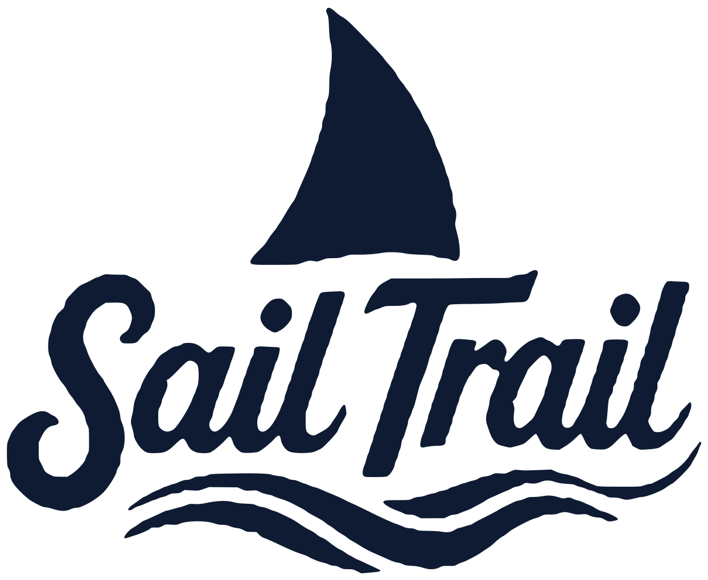
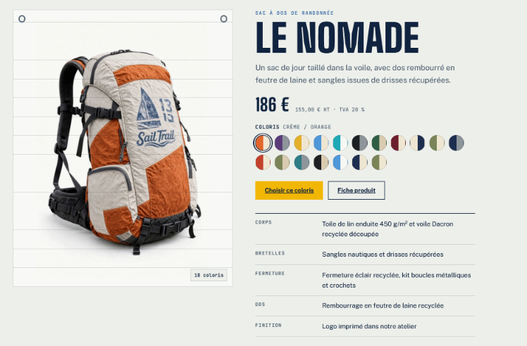

Projet Supply Chain · Odoo 2026 · FIGIM 2A
Des voiles de bateau en fin de vie aux sacs et casquettes : notre chaîne logistique verte, pilotée dans Odoo
Oscar · Youenn · Malouan · Loric · Pierre-Ferric
L’entreprise
Oscar
Sac
Voile Dacron recyclée, toile de lin, zip recyclé.
Prix HT
155 €
Coût
60,50 €
Casquette
Voile recyclée, visière et bouton.
Prix HT
41,67 €
Coût
28,50 €
Une supply chain verte
Oscar
1
Voiles collectées sur d’anciens bateaux par deux fournisseurs, Atlantic Sail Recovery et BreizhVoile : de la logistique inverse en amont.
2
Les matières vont droit à l’atelier, sans détour par notre entrepôt.
3
Fournisseurs en France, boîte d’expédition éco-conçue.
La chaîne logistique
Youenn
1 · Achats
Les Tissages de la Côte d’Albâtre
Toile de lin 8,50 € · sangles 2,50 €
11 €
Hardware Durable
Boucles 5 € · visière 5 € · bouton 1 €
11 €
Atlantic Sail Recovery
Voile de casquette
5 €
Cartonnages Verts
Boîte éco-conçue ×2
5 €
Éco-Feutre du Midi
Rembourrage feutre
4,50 €
BreizhVoile
Voile Dacron du sac
4 €
EcoZip France
Fermeture éclair
2,50 €
2 · Sous-traitance
Reçoit les matières et coud le produit brut.
3 · Chez nous
Logo et mise en carton : 6 min.
4 · Vente
Site eCommerce ou devis.

Les matières de couture n’entrent jamais dans notre entrepôt : un seul trajet, du fournisseur à l’atelier.
Méthode de gestion · production
Malouan
1
Inventaire
Le sac brut cousu par l’atelier : 27 € de matières + 28 € de couture.
55 €
2
Qualité
Dimensions et étanchéité : conforme ou non conforme.
Pass / Fail
3
Fabrication
Brut + boîte (2,50 €) + logo 2 min + carton 4 min (3 €).
+ 5,50 €
4
Inventaire
Prête à livrer, coût de revient calculé seul par Odoo.
60,50 €
Fabrication à la commande : on ne fabrique une variante que lorsqu’un client la commande.
Commande client → ordre de fabrication de la couleur choisie · Brut sous 5 → achat à l’atelier pour remonter à 15
Méthode de gestion · calcul des besoins
Malouan
Ce que nous faisons
Proposé par la règle min/max quand le stock passe sous 5 ; on le confirme.
créé automatiquement
créées automatiquement, livraison à l’atelier déjà remplie
C’est le calcul des besoins (MRP) du cours, fait par l’ERP.
Le cycle d’une commande
Loric
1
Site ou devis
Ventes
eCommerce
2
Brut acheté à l’atelier, contrôlé puis mis en stock
Achats
Inventaire
Qualité
3
Lancée par la commande, pour la variante choisie
Fabrication
4
Et facture
Inventaire
Comptabilité
5
Rapprochement bancaire automatique
Comptabilité
Nos coûts
Loric
Matières
Couture (atelier)
Boîte : 2,50 €
Finition : 3 €
Marge
Bilan
Pierre-Ferric
Ventes
Achats
Inventaire
Fabrication
Comptabilité
eCommerce
Qualité
Employés
Calendrier
Rendez-vous
Réappro auto
Rapprochement auto
Pilotage : tableau de bord des stocks et ventes
Fin de vie : reprendre nos sacs
Sail Trail · Odoo 2026
Des questions ?
Oscar · Youenn · Malouan · Loric · Pierre-Ferric